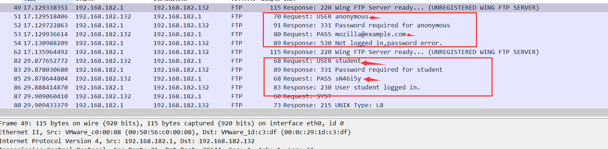

# 1、A 主机上外网，B 运行 sinffer (Wireshark) 选定只抓源为 A 的数据)。
# 1.1 写出以上过滤语句。
ip.src == ipaddress of A
wireshark 过滤规则及使用方法
# 1.2 B 是否能看到 A 和外网的通信（A 刚输入的帐户和口令）？为什么？
能，因为我们都是在一个网段下。
# 2.1 为了捕获 A 到外网的数据，B 实施 ARP 欺骗攻击，B 将冒充该子网的什么实体？
网关 （gateway）
# 2.2 写出 arpspoof 命令格式。
# 2.3 B 是否能看到 A 和外网的通信（A 刚输入的帐户和口令）？
若 B 实现 arp 欺骗则可以
# 2.4 在互联网上找到任意一个以明文方式传递用户帐号、密码的网站，截图 Wireshark 中显示的明文信息。
# 3.FTP 数据还原部分：利用 WireShark 打开实验实验数据 data.pcapng。
# 3.1 FTP 服务器的 IP 地址是多少？你是如何发现其为 FTP 服务器的？
FTP 支持两种模式，一种方式叫做 Standard (也就是 PORT 方式，主动方式)，一种是 Passive (也就是 PASV，被动方式)。 Standard 模式 FTP 的客户端发送 PORT 命令到 FTP 服务器。Passive 模式 FTP 的客户端发送 PASV 命令到 FTP Server。
FTP 服务器向用户询问密码，所以判断 192.168.182.1 是 FTP 服务器
# 3.2 客户端登录 FTP 服务器的账号和密码分别是什么？

可以看到有两次登录第一次失败了，第二次成功了
账号：student 密码：sN46i5y
# 3.3 客户端从 FTP 下载或查看了 2 个文件，一个为 ZIP 文件，一个为 TXT 文件，文件名分别是什么？提示：文件名有可能是中文。
压缩包：1.zip
文件：复习题.txt
# 3.4 还原 ZIP 文件并打开（ZIP 有解压密码，试图破解，提示：密码全为数字，并为 6 位）。截图破解过程。
文件传输层用的是 tcp 协议，ip 是 ftp 服务器
之后再查找压缩文件头 HEX 504B
可以看到 1.zip
追踪 tcp 数据流然后保存下来解压，发现有密码。
尝试破解
这里使用的是 ARCHPR
还好密码比较简单，之前暴力破解一个 zip 一个晚上都没出结果
随缘😂
还原后的图片
密码：123456
# 3.5 TXT 文件的内容是什么？
txt 文件没有 HEX 数据头，所以跟踪到文件
FTP DATA 中存有 txt 的原始数据
# 4、MD5 破解
# SqlMap 得到某数据库用户表信息，用户口令的 MD5 值为 7282C5050CFE7DF5E09A33CA456B94AE
那么，口令的明文是什么？（提示：MD5 值破解）
明文：iampotato
MD5 值目前的技术很难破解，一般采取 “碰撞” 的方式破解
网页链接：MD5 是什么？
# 5、John the Ripper 的作用是什么？
John the Ripper 是一个暴力破解密码的软件
采用的是字典爆破模式，可导入用户自己的字典
网页链接：密码破解利器 John the Rippe 使用详细
# 思考问题：
# 1、谈谈如何防止 ARP 攻击。
arp 欺骗原理
1. 静态网关地址
# 2、安全的密码（口令）应遵循的原则。
比较冗长我总结一下
1. 不使用弱密码
2. 不重复使用密码
3. 密码难度依据重要程度而定
安全密码三原则
# 3、谈谈字典攻击中字典的重要性。
一个好的密码字典决定了破解的成功与否，好的密码字典要命中率高，所以最好的字典是根据个人的特性设计的，这样成功率会高一点。字典的重要性：字典中没有你要的密码的话都是白瞎！
# 4、实验小结。
本次试验我了解到了 arp 欺骗的原理，认识了 ftp 服务，知道了何为 MD5，但是都是简单的复现和认识。要灵活自如的上手还没有达到那个水平。在实验中 arpspoof 做 arp 欺骗成功了，网关和欺骗者 mac 地址相同，之后开启转发但是依旧失败。
安全路上上道阻且长，加油吧骚年！